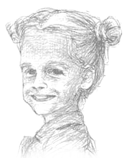

★にこにこ☆イラストレーション★Nikoniko☆Illustrations★
☆左手描きイラストのページへようこそ！☆
☆ Welcome to the left-handed illustrator's page! ☆
|  | |

｜宿曜占星術・占いポータル・誕生日の占いプレゼント・大恋愛占い｜
｜javascriptボタン作例｜ flashバナー作例｜ gifバナー作例1｜ gifバナー作例2｜
★印刷物作品見本★
国際知財団体パンフレット｜ 特許図面作例｜ ポスター作例｜ セミナーチラシ作例｜ アニメ風人物｜